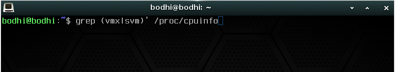

Chapitre 1
Faire de la visualisation de
type 2 sur linux
Pour tout le long de ce guide, j'utiliserai Bodhi Linux, qui est un systeme d'exploitation baser sur Debian, comme systeme d'exploitation.
Les pre-requis :
Pour être en mesure de virtualiser un système d'exploitation 64 bits, le microprocesseur de votre ordinateur hôte doit être doté d'une technologie appelée virtualisation assistée matériellement (ou accélération matérielle). Cette technologie est identifiée AMD-V chez AMD et Intel VT-x chez Intel. Généralement incluse dans les processeurs récents, la virtualisation matérielle doit toutefois bien souvent être activée dans le BIOS/UEFI de l'ordinateur et paramétrée convenablement dans les paramètres de la machine virtuelle. Tous les processeurs ne sont pas capables de virtualisation matérielle.
Pour savoir si votre processeur dispose de cette technologie, effectuer la commande suivante dans un terminal :
Si la commande ne retourne rien, c'est que votre processeur n'a pas d'accelleration materielle. La virtualisation de systeme d'exploitation 64 bits n'est pas disponible sur votre ordinateur. Vous pouvez cependant faire de la virtualisation de systeme d'exploitation 32 bits.

egrep '^flags.*(vmx|svm)' /proc/cpuinfo
Commencer :
Pour commencer, nous allons installer un hyperviseur de type 2. Mais Jamie, c'est quoi un hyperviseur de type 2 ?
hyperviseur s'exécute sur un système d'exploitation hôte existant. Il utilise les ressources matérielles de ce système pour créer et exécuter des machines virtuelles. Les systèmes d'exploitation invités fonctionnent à l'intérieur de ce système d'exploitation hôte. Des exemples d'hyperviseurs de type 2 incluent VMware Workstation Player, VirtualBox et KVM.
VMware Workstation Player
VirtualBox
KVM
Guide : VMware Workstation Player
1 : INSTALLATION :
1.1 :
Pour commencer nous allons mettre a jour tous les paquets de Linux en effectuant ces commandes :
1.2 :
Maintenant nous allons installer VMware Worksation Player ainsi que ces dependences :
- Commencons par installer le paquage build-essentials :
- Allez sur le site officiel de et installer la version Linux, cela vous telechargera un .bundle .
- Ouvrez ensuite un terminal et rendez-vous dans le dans le dossier ou le
.bundle
a ete telecharger.
- Nous allons maintenant rentre ce fichier executable:
- Pour finir, executer le fichier avec les droit d'administrateur :
Le script téléchargera et installera ensuite les dépendances nécessaires puis, ouvrira l'installateur graphique de l'application.
(Pas d'inquiétude si le terminal vous renvoie une erreur concernant l'installation du module "murrine". Cela n'empêche aucunement l'installation et l'utilisation de Vmware Workstation Player).
- Valider les licences d'utilisation.
- Suivre les instructions à l'écran.
2 : Creer sa premiere machine virtuelle :
2.1 :
Nous allons maintenant telecharger un systeme d'exploitation sous la forme .ISO, voici quelque liens d'ISO souvent utiliser :
2.2 :
Pour ce guide j'utiliserais un ISO de Windows 10.
-
Demarrer maintenant VMware Workstation Player puis cliquez sur "Create a new virtual machine"
- VMware vous demanderas qu'elle methode d'installations vous souhaitez utilisez, dans notre cas nous voulons utiliser la methode "installer disc image file(ISO)"
- Vous devrez rentrer ensuite toutes les informations necessaires au parametrage de windows
- Nommez ensuite votre machine virtuel et choisissez ou elle sera stocker sur votre ordiinateur
- Choisissez maintenant la taille de stockage que votre machine virtuel aura. Cela utilisera du stockage de votre ordinateur hote.
- Pour finir, un resume complet de la machine virtuelle apparait, cliquer sur finish pour creer la mavhine virtuelle
Felicitations, vous venez de creer votre premiere machine virtuelle.
cd Chemin/du/dossierDeTelechargement
VMware Workstation Player
chmod +x VMware-Player.bundle
cd Chemin/du/dossierDeTelechargement
sudo ./VMware-Player*.bundle
Windows 10
Ubuntu